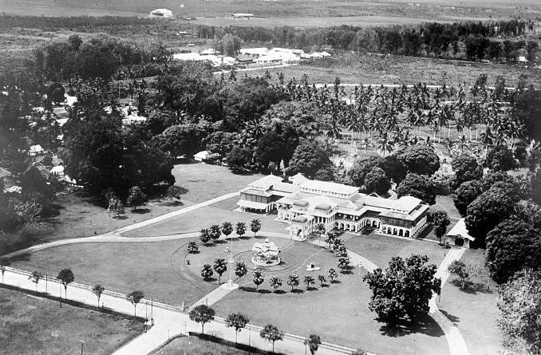

Sejarah Medan berawal dari sebuah kampung yang didirikan oleh Guru Patimpus di pertemuan Sungai Deli dan Sungai Babura. Hari jadi Kota Medan ditetapkan pada 1 Juli 1590. Selanjutnya pada tahun 1632, Medan dijadikan pusat pemerintahan Kesultanan Deli, sebuah kerajaan Melayu. Bangsa Eropa mulai menemukan Medan sejak kedatangan John Anderson dari Inggris pada tahun 1823. Peradaban di Medan terus berkembang hingga Pemerintah Hindia Belanda memberikan status kota pada 1 April 1909 dan menjadikannya pusat pemerintahan Karesidenan Sumatra Timur. Memasuki abad ke-20, Medan menjadi kota yang penting di luar Jawa, terutama setelah pemerintah kolonial membuka perusahaan perkebunan secara besar-besaran.
Sejarah
